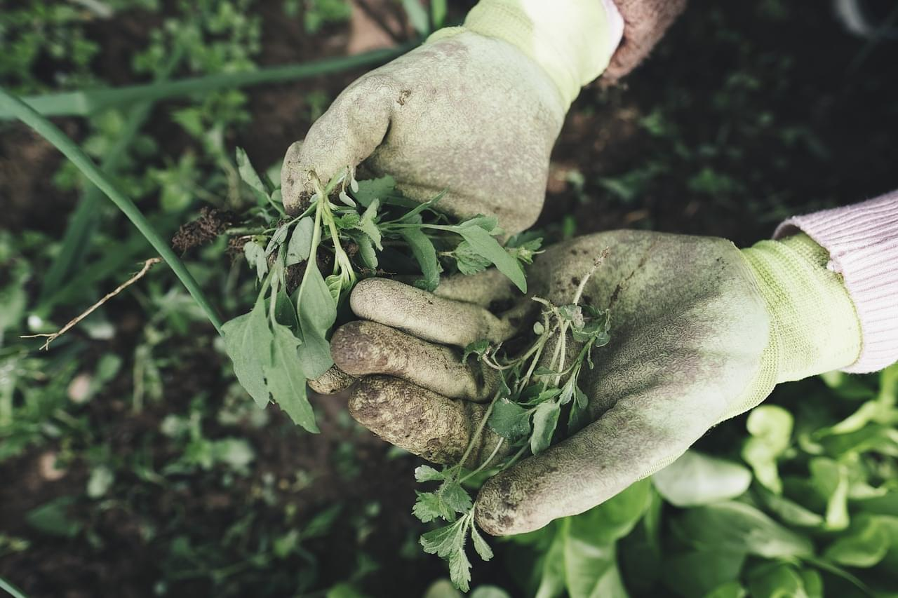

IRRIGATION SYSTEM
Another aspect of irrigation optimization is water control. About 70% of clean water is used for agricultural needs worldwide. And 60% of it is wasted. Modern technology systems solve this problem allowing remote control and efficient distribution.
Weed Management
Weeds deprive cultivated plants of nutrients, obscure them from the sun. Weeds carry diseases or can spread pests. According to various sources, farmers lose 10-50% of their harvest annually because of weeds.

Crop ROtation
Crop rotation is a priority condition for improving the soil, crops and the environment. Using our platform, you can easily control crop rotation by updating data on what crops were grown in certain areas and how they alternated.